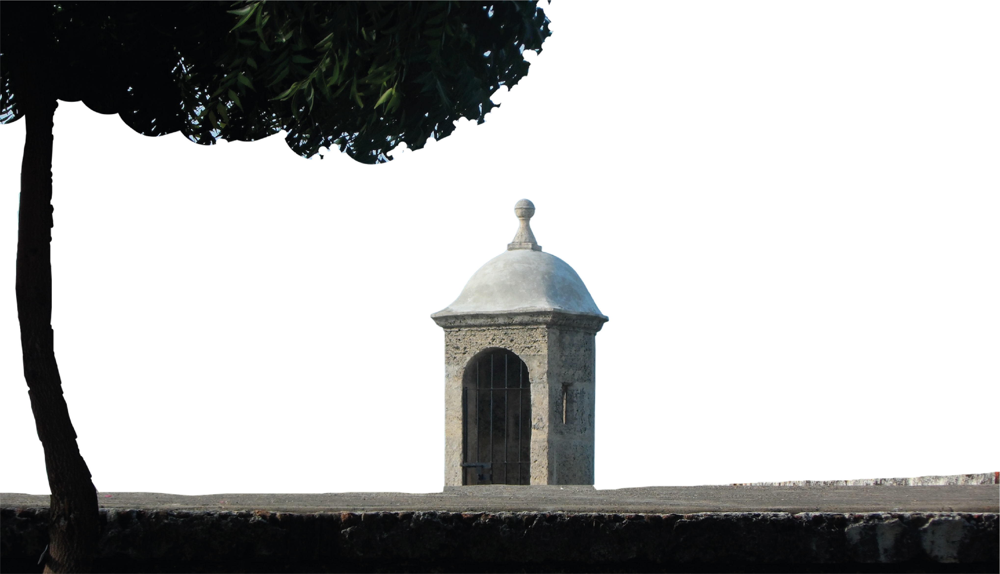
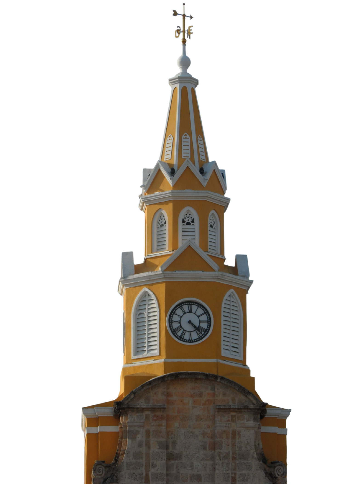

San Basilio de
PALENQUE
Descubre la cultura, historia
y tradiciones de este pueblo único.
Descubre la cultura, historia
y tradiciones de este pueblo único.

En San Basilio de Palenque no solo vive una comunidad, vive la memoria. Aquí, cada sonrisa, cada palabra en lengua palenquera y cada ritmo de tambor cuenta una historia que se negó a desaparecer.
Ser afrodescendiente en Palenque es resistencia, es orgullo, es herencia viva. Es llevar en la piel y en el corazón la fuerza de quienes lucharon por la libertad cuando todo parecía imposible.

Esta no es solo una cultura para observar, es una cultura para sentir. En su música, en su comida y en sus tradiciones hay identidad, hay raíces, hay verdad.
Te invitamos a conocer un poco sobre ellos. Esperamos que, al igual que nosotras, te quedes con una sonrisa que no se borra.